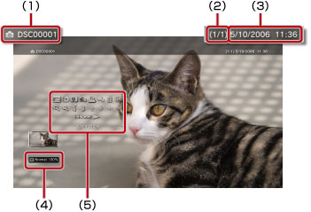

Foto > Använda kontrollpanelen
Använda kontrollpanelen
Du kan utföra olika funktioner med kontrollpanelen på skärmen. Kontrollpanelen kan visas eller döljas genom att trycka på knappen  .
.
Visningsläge

Ändrar storlek på den bild som visas på skärmen.
| Normal | Anges när man vill visa bilden så att den passar skärmstorleken utan att proportionerna behöver ändras. |
|---|---|
| Zoom | Anges när man vill visa bilden i helskärm utan att proportionerna behöver ändras. Delar av bilden beskärs i överkant och underkant eller i vänster- och högerkant. |
Tips!
Beroende på bildfilens typ kanske det inte går att växla visningsläge.
Ändra effekt
Byt metod för att växla bilder.
| Normal | Anges för att ersätta bilden som visas med nästa bild. |
|---|---|
| Dia | Anges för att ersätta den bild som visas med nästa bild i ett bildspel. |
| Övertoning | Ställ in för att använda toningseffekten för att byta till nästa bild. |
Trimning
Radera onödiga delar i en bilds ovan-, under-, vänster- eller högersida. Använd vänster och höger spak på den trådlösa kontrollern för att markera det område du vill behålla. Använd den vänstra spaken för att rulla i valfri riktning, och den högra spaken för att zooma in eller ut. Trimmade bilder sparas med ett annat filnamn.
Tips!
Endast bilder som har lagrats i lagringsminnet på PS3™-systemet kan beskäras.
Lägg till i spellistan
Lägg till en bild till en spellista.
Tips!
Endast bilder som har sparats i lagringsminnet kan läggas till i en spellista.
Skriv ut
Skriv ut en bild på en skrivare.
Tips!
För att skriva ut måste du först konfigurera skrivaren vid [Val av skrivare] under  (Inställningar) >
(Inställningar) >  (Skrivarinställningar).
(Skrivarinställningar).
Använd som skrivbordsunderlägg
Ställ in vilken bild som ska visas på skärmen som skrivbordsunderlägg. Bilden är inställd precis som den visas på skärmen, oavsett om den förstoras, förminskas eller roteras.
Tips!
- När inte skrivbordsunderlägg används justeras inställningarna under (Inställningar) >
 (Temainställningar) > [Bakgrund].
(Temainställningar) > [Bakgrund]. - Man kan bara ställa in en bild åt gången som skrivbordsunderlägg. Om ytterligare en bild väljs kommer den föregående bilden att skrivas över.
Radera
Radera bilder.
Tips!
Endast bilder som har sparats i lagringsminnet kan raderas.
Visa
Visa information om en bild. Varje gång du trycker på knappen  kommer den att växla mellan skärmen med Exif-information, skärmen med ett informationsfält och skärmen utan extra information.
kommer den att växla mellan skärmen med Exif-information, skärmen med ett informationsfält och skärmen utan extra information.
En skärm med ett informationsfält

(1) |
Bildnamn |
|---|---|
(2) |
Bildnummer/Totala antalet bilder |
(3) |
Datum och tid då bilden togs |
(4) |
Statusikon |
(5) |
Kontrollpanel |
Zooma in/Zooma ut

Zooma in eller ut för att förstora eller förminska en bild. Du kan använda den vänstra spaken på den trådlösa handkontrollen för att rulla i valfri riktning, och den högra spaken för att zooma in eller ut.
Rotera vänster/Rotera höger
Rotera bilden 90 grader åt vänster eller åt höger.
Upp/Ned/Vänster/Höger
Flytta bilden för att visa eventuella dolda delar, t.ex. när (Visningsläge) är inställt på [Zoom].
Föregående/nästa
Visa föregående eller nästa bild.
Bildspel
Visa alla bilder automatiskt i ordningsföljd.